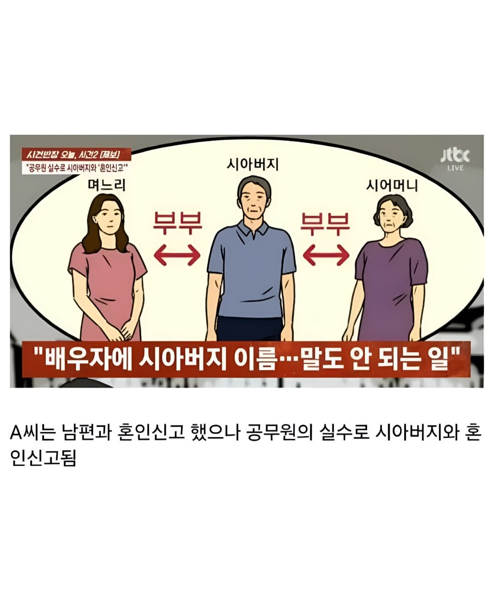
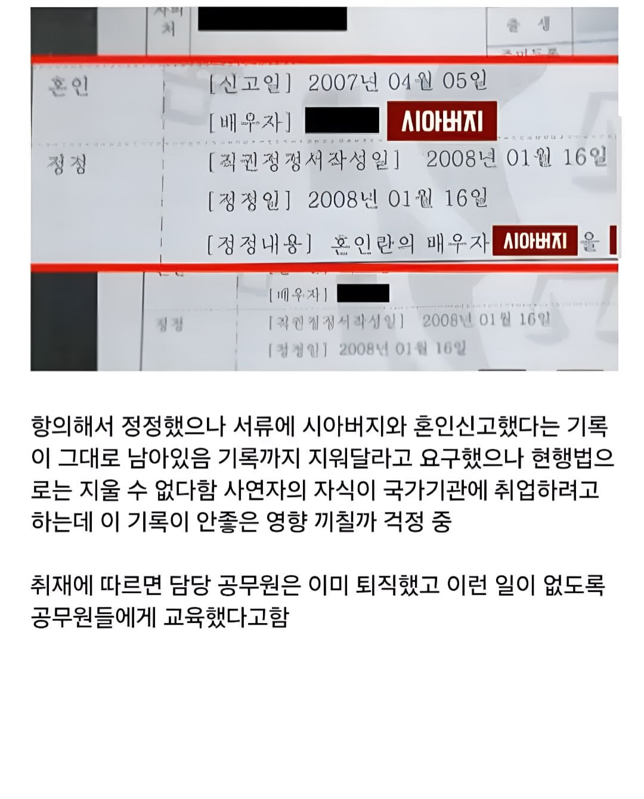

병신같은 나라 이전에 제적등본은 나라에서 발급은 되어도 더이상 사용되는 서류가 아니라서 '직권정정'한 사실도 못 지움. 가족관계증명서랑 기본증명서, 주민등록등초본으로 보면 됐지
종이서류 전산화하던때 온갖 휴먼에러가 많았다던데 2007년의 저 공무원은 전날 과음했었던듯
특히나 제적등본은 휘갈겨 작성해서 글씨를 알아보기 힘들었던 것도 있고 그러다보니 담당자가 읽을 때 숫자를 오독할 수도 있음. 이거 가족관계 서류 말고도 토지나 건축물 전산화 때도 똑같이 있었던 일...
우리나라는 중혼이 안되는데 시아버지는 2번 결혼한거냐고
저게 시스템으로 안막히는거면 떼쓰면 일부다처제 가능한거네?
이미 일부다처 일처다부제 시행아니냐 신고하고 정정에 8개월이나 걸렸는데 ㅋㅋㅋ
저정도 급은 아니었지만 난 전입신고 했을 때 전 주소가 어디 304호고 바뀐 주소가 301호인데 담당자가 전입 주소는 제대로, 호수는 이전 살던 304호로 등록해놨고 이사간 곳은 304호도 없어서 엿먹음 ㅋㅋ
한동안 우편물 와야될게 안오길래 상담사하고 통화하다 확인되서 다시 수정하는데 그것도 개번거롭고 지가 잘못 등록해서 그 상황 만들어 놓고 다른 사람이 알면 쪽팔려서 그런지 내가 잘못해서 그렇게 된 것 같은 뉘앙스로 툴툴거리길래 그 때 확정신고도 같이 하느라 임대차 계약서도 제출했는데 뭘 보고 등록했냐고 따지니까 아닥
???: 며늘아 기왕 이렇게 된 거

시발 현행법의 뭘근거로 안된다는건지 말을해야지 담당자 과실이면 조치를해야될거아냐
사고는 쳤고 되돌릴방법은 있는데 ㅈㄴ 귀찮거나 본인 고과에 해가된다거나 하는거 아닐까 현행법 타령 믿기가 어렵네
천민새끼들아 나랏님들 일하시는데 쯧
라고 생각하면 안됨
존나 병신같네 얼마나 개폐급인거야
오 그럼 일부다처제 가능한거였네?
논란일자 퇴직런
지들이 잘못해놓고 못바꿔준다는 개소리 하는건 도무지 이해가 안되네.
내 남편이 낳아준 남편
공무원 새끼들도 보면 일 참 편하게해
안짤리니깐 몰루, 못함 ㅇㅈㄹㅋㅋ
지들 힘들어하는것만 강조 존나 해서 그렇지
안짤리는거에서 오는 무책임함과 무능함도 존나 큼
근데 국가기관 취업할 때 부모님 혼인기록까지 조사해?
그럼 실수한 새끼 이름이라도 처 박던가 해라
처리자 : 주무관 김개붕
이런식으로
근데 국가기관 취업하는데 사실도 아니고 정정한 부분이 불이익울 줌?
이미 배우자가 있는데 다른 사람이랑 혼인 관계가 추가로 등록이 되는거였어? 일부다처제 대단하네
근디 행정소송으로도 안되는거야??
어쨌든 중혼이 가능하다는 거네 서류상으로는
이거 완전 히토미
기록을 왜 못 없애 미친
현행법 ㅋㅋㅋㅋㅋㅋ 병신같은 나라가 옛법은 쫌 고쳐라 부모자식간에 주소지 나오는것도 좀 못보게 바꾸고 부모자식관계가 낙인이네 낙인